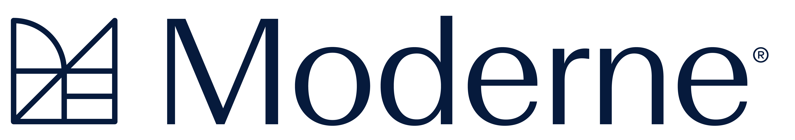

A dual-mode system on one brand spine. Near-black or paper-white canvas, Digital Green as the live accent, Inter all-caps labels for anything systematic, and the building-blocks mark that flips with the theme. Deliberate, engineered, confident.
Discover how to fix vulnerabilities, standardize code quality, perform type-aware code searches, and accelerate refactoring at enterprise scale.
Most coding agents today—Copilot, Claude Code, Amp, and others—work from the same constraint: Fragmented, incomplete context. So they build knowledge on the fly—inferring across gaps, leading to guesswork, inconsistent outcomes, and inflated token usage.
Moderne Prethink changes this. It provides agents with structured, precomputed knowledge derived from a compiler-accurate semantic model of the code. By starting with authoritative, shared context, agents are able to reduce token overhead, improve accuracy, and get to answers faster—with more consistent outcomes across teams.
Moderne Trigrep fast search uses a trigram index infused with symbolic data that's easily maintained. PLUS: symbol-aware search reduces subsequent agent reads and searches, saving time and tokens.
Moderne Prethink precomputed knowledge base is built from compiler-accurate semantic data. Agents start with reliable context instead of reconstructing it, saving time and tokens.
Moderne deterministic recipes called by agents accurately complete a multi-step migration—trading GPUs for CPUs.
Most coding agents today—Copilot, Claude Code, Amp, and others—work from the same constraint: Fragmented, incomplete context. So they build knowledge on the fly—inferring across gaps, leading to guesswork, inconsistent outcomes, and inflated token usage.
Moderne Prethink changes this. It provides agents with structured, precomputed knowledge derived from a compiler-accurate semantic model of the code. By starting with authoritative, shared context, agents are able to reduce token overhead, improve accuracy, and get to answers faster—with more consistent outcomes across teams.